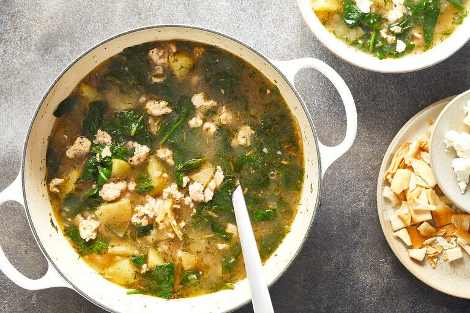

Lemony Greek Chicken, Spinach and Potato Stew

Description
If your favorite Greek foods are the lively vegetable dishes, this meal-in-a-bowl stew is for you. A simple mix of lemon, garlic and lots of herbs enliven the potatoes and spinach and using ground meat ensures a lot of flavor in very little time. Ground turkey or pork would be just as good, if you prefer. Russets can be substituted for Yukon golds, but their texture will be more grainy and less creamy. Mature spinach or frozen spinach works best here because of its mellow flavor, as opposed to baby spinach, which is more tannic. Add the amount of dill that sounds best to you, or if you don’t like it, swap in a few tablespoons of fresh parsley or mint.
Ingredients
- 1⁄4 cup extra-virgin olive oil
- 1 red or yellow onion, finely chopped
- 8 large garlic cloves, smashed and finely chopped
- 11⁄2 teaspoons coarse kosher salt, plus more to taste
- 1 pound ground chicken
- 1 heaping tablespoon roughly chopped fresh rosemary (leaves of about 1 large sprig) or 11⁄2 teaspoons dried rosemary
- 11⁄2 teaspoons dried oregano
- 1 teaspoon red-pepper flakes
- Black pepper
- 11⁄2 pounds Yukon gold potatoes (about 3 medium), scrubbed and chopped into 1⁄2-inch chunks
- 6 cups chicken broth
- Juice of 1 large lemon (about 1⁄4 cup juice)
- 1 (8-ounce) bunch mature spinach, stems included, chopped, or 11⁄2 cups frozen leaf spinach
- 1⁄4 to 1⁄3 cup lightly packed roughly chopped dill
- Crumbled feta and crushed pita chips, for topping
Steps
- In a large pot or Dutch oven, warm the oil over high heat. Add the onion, garlic and salt and cook, stirring, until the onion and garlic are softened and just starting to brown, 5 minutes. (Decrease the heat to medium-high if necessary to prevent scorching.)
- Decrease the heat to medium-high and add the chicken, rosemary, oregano, red-pepper flakes and several generous grinds of black pepper. Cook, breaking up the chicken into crumbles, until the meat starts to lose its translucent pinkness and is turning white, about 2 minutes. Add the potatoes and stir well to combine. Add the chicken broth and half the lemon juice, scraping up any browned bits on the bottom. Bring to a rolling boil and then lower the heat to maintain a very brisk simmer. Simmer until the potatoes are nearly tender, 15 minutes.
- Add the spinach and dill, to taste. Continue to simmer briskly until the potatoes are tender, about 5 minutes more. Taste and add some or all of the remaining lemon juice, as well as more salt and pepper, if desired. Serve in bowls topped with feta and crushed pita chips.